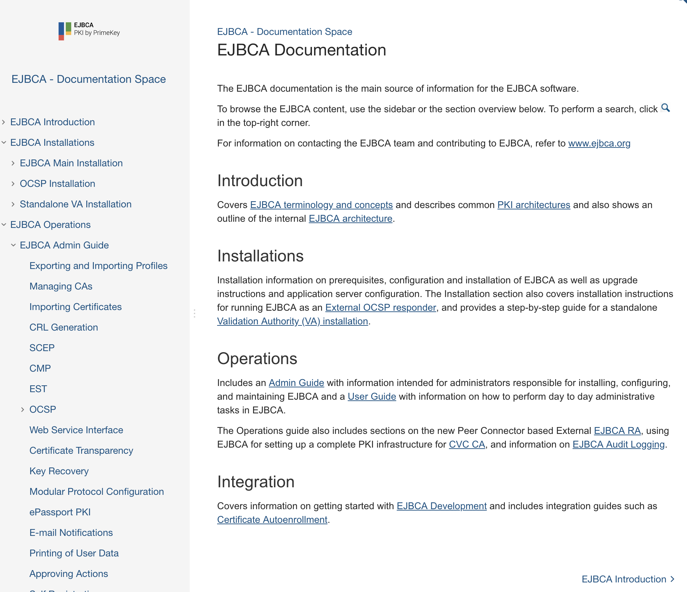
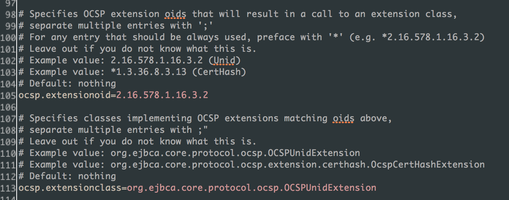
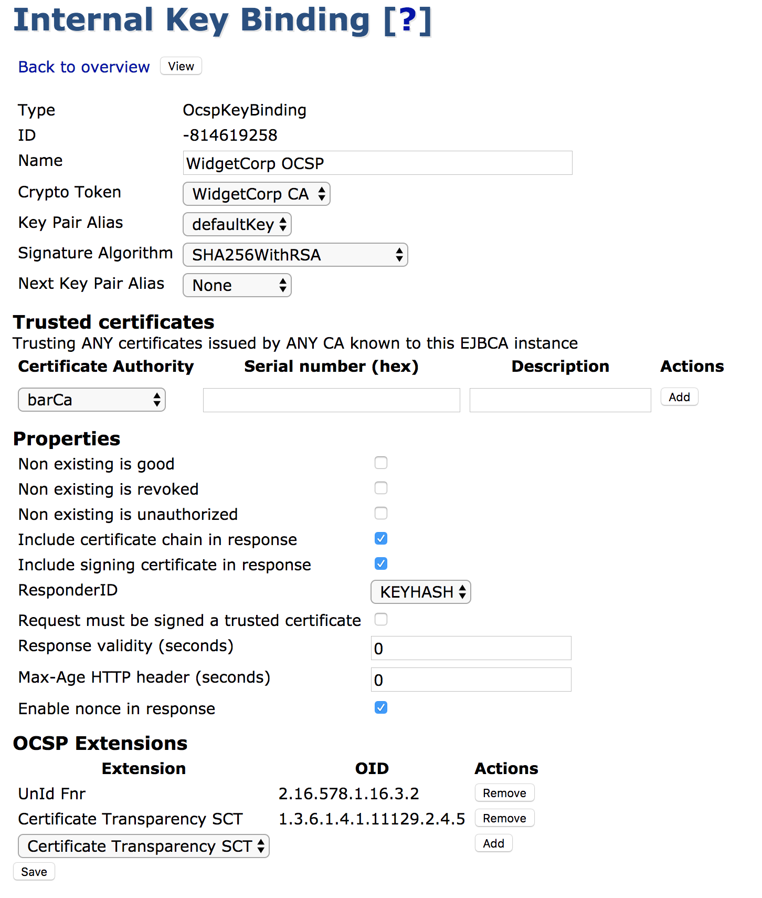
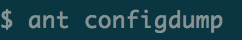
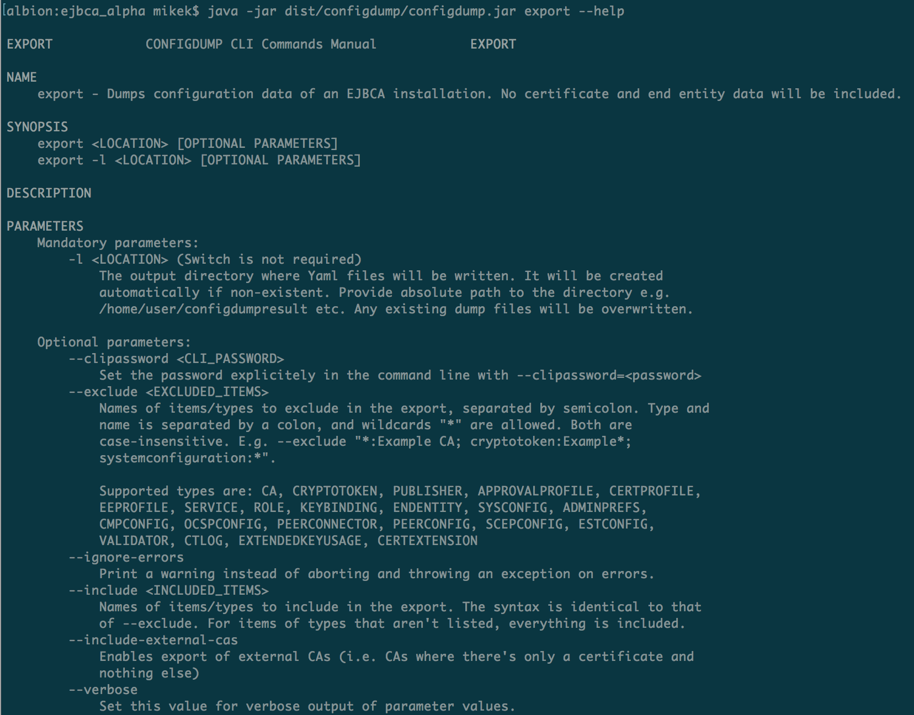
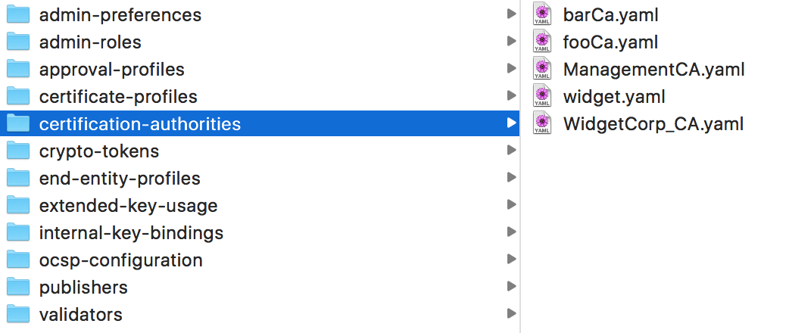
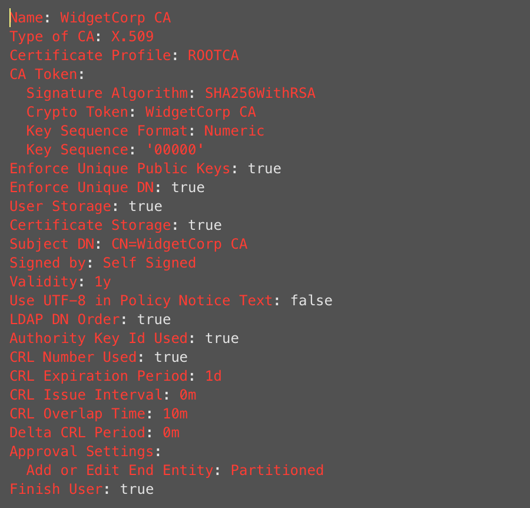

EJBCA 6.12 Release Notes
The PrimeKey EJBCA team is pleased to announce the feature release EJBCA 6.12, and a small step but important step forward in the development of EJBCA. The first changes I'd like to divulge are organisational, we added some very important personell to our team. PrimeKey has hired a dedicated tech writer, Annica, who will be helping both the EJBCA and SignServer teams to get our much maligned documentation in order. Secondly, we've started taking in some outside help for development work, integrating them into our core team in order to increase throughput. So, what is new with this release?
Features
Revamped Documentation
Having listened to all your calls of woe and distress over the state of the documentation (and I may add, much of our own), our tech writer Annica has performed a Herculean effort in shifting the entire thing over to Confluence instead of the ancient xdoc format.

Naturally, this is just a first step towards a far more organized, updated and user friendly documentation. You may notice a sense of chaos and disarray in the current structure, and while we agree with you fully, that is merely a consequence of the already existent structure coming to light. Major changes to take notice to that the release notes (this document), change log and upgrade instructions have all been moved in here as well. They're still available offline from within the doc folder in the release zip, but are now also published both online and deployed with EJBCA to the application server.
Configurable OCSP Extensions
We've put quite a bit of work into OCSP Extensions. Those of you familiar with OCSP Extensions will probably remember configuring them through ocsp.properties configuration file.

In order to make extension configuration simpler and more precise we've moved it to the UI, and set it up to act per keybinding instead. Any existing extensions defined in the configuration files will automatically be added to existing OCSP keybinding configurations, but please read more about that and more in the upgrade notes.

Additional Proxying Capabilies in the RA
As responde to external demand, we've added two new features to the RA:
-
The ability to proxy SCEP requests, much as is done with CMP and EST already
-
We added forwarding of revocation and revocation status requests over SOAP. The full list of methods in the EJBCA WS that can be proxied via the RA are:
-
certificateRequest
-
checkRevokationStatus
-
getLastCertChain
-
keyRecover
-
keyRecoverEnroll
-
revokeCert
The ConfigDump Export and Audit Tool
Some of you may be previously familiar with our StateDump tool, an application for exporting and importing installations. While this has solved many problems for us and some of our customers in our past, a very common deficiency in the tool has always been that the XML based dumps are difficult to read, edit and manage, and that the data therein has never been human readable. We have thus decided to venture on remaking this tool from the ground up, and making the first iteration (which is only export capable) publicly available. It is built and run from the command line:


This results in a neat structure of export files sorted by type:

Which are serialized and normalized as yaml objects. Any UID references are replaced with their human-readable names.

We very much hope that you'll find this tool useful in the future for change hanling and auditing.
Upgrade Information
Read the EJBCA 6.12 Upgrade Notes for important information about this release. For upgrade instructions and information on upgrade paths, see Upgrading EJBCA.
Change Log: Resolved Issues
For full details of fixed bugs and implemented features in EJBCA 6.12.0, refer to our JIRA Issue Tracker.
Epics
ECA-5339 - Initial REST API
ECA-6464 - Implement UnidFnr as a Module
ECA-6466 - YAML Based Configuration Export
New Feature
ECA-1960 - GUI: End-Entity Search results usability (actions with buttons)
ECA-5752 - Split out CSS from AdminGUI template.xhtml and provide theme support
ECA-5840 - Create an ant script that automatically exports EJBCA documentation to a local directory
ECA-6477 - Create base classes for the web test module
ECA-6514 - Create test + pilot export with basic End Entity Profiles export using YAML
ECA-6515 - Finish End Entity Profile YAML export
ECA-6516 - Create CLI interface for YAML export
ECA-6517 - Create YAML export for Validators
ECA-6518 - Create YAML export for CAs
ECA-6519 - Create YAML export for Certificate Profiles
ECA-6521 - Create YAML export for EST Configuration
ECA-6522 - Create YAML export for Services
ECA-6523 - Create YAML export for Publishers
ECA-6524 - Create YAML export for Crypto Tokens
ECA-6525 - Create YAML export for Roles
ECA-6526 - Create YAML export for Peer Connectors
ECA-6527 - Create YAML export for Internal Key Bindings
ECA-6528 - Create YAML export for Ocsp Configuration
ECA-6530 - Create YAML export for Admin Preferences
ECA-6532 - Options for what to include and exclude in YAML export
ECA-6533 - Create module for YAML export
ECA-6543 - Add CLI support for EST configs
ECA-6544 - Update test.xmli for YAML module
ECA-6546 - Implement java.util.Map to YAML conversion
ECA-6549 - Create automated test for ECAQA-153
ECA-6550 - Create automated test for ECAQA-87
ECA-6560 - Create automated test for ECAQA-98
ECA-6567 - Create automated test for ECAQA-78
ECA-6580 - Create YAML export for User Notifications in End Entity Profiles
ECA-6606 - Certificate revocation using EJBCA WebService API through External (Peer) RA
ECA-6615 - Fail hard if building with Confluence pull property set, but Confluence server can't be contacted.
ECA-6617 - Ensure that the Confluence docs are automatically (and always) updated with the ziprelease.
ECA-6620 - Put a placeholder page in Documentation if building without any prior Documentation retrieved
ECA-6629 - Create YAML export for SCEP configuration
ECA-6634 - Support SCEP via the RA
ECA-6646 - Remap all ? links in CA UI from old documentation to new Confluence based documentation
ECA-6649 - Configdump CA fixes
ECA-6661 - Remove init code from UNID-FNR OCSP Extension implementation
ECA-6662 - Entity bean (protected data)
ECA-6663 - SSB (with logic to check signature)
ECA-6664 - Create Scripts for DB Table
ECA-6665 - Module for UnidFnr
ECA-6666 - UnidFnr upgrade handling
ECA-6668 - Plugin config
ECA-6670 - Error handling matrix documentation
ECA-6671 - Add CA ID generation to clientToolBox
ECA-6672 - OCSP ext. UI selection per keybinding
ECA-6673 - High level OCSP Unid testing (Mock DB)
ECA-6674 - Current error handling (matrix)
ECA-6695 - Create automated test for ECAQA-138
ECA-6696 - Create a helper class for Web Tests
Task
ECA-6465 - Investigate the impact of curve aliases changing in BC v1.59
ECA-6483 - Add static code analyzing support for EJBCA code base.
ECA-6493 - Clean up warnings in CertProfileBean
ECA-6513 - Investigate and decide library to use for YAML
ECA-6553 - Update copyright year to 2018
ECA-6561 - Clean up ejbca.org and tighten up site
ECA-6585 - Create a CT logging Test Root
ECA-6708 - Update tests for ProtocolLookupServerHttpTest for new UNID implementation
Improvements
ECA-2156 - GUI: Search forms layout and usability
ECA-2731 - Move all find* methods from EndEntityManagementSession to EndEntityAccessSession
ECA-3417 - CaSession.getCAInfo and other get* methods in CaSession should return null
ECA-3610 - Bring all CRUD methods from UserData to EndEntityAccessSession
ECA-3772 - InformationMemory and associated cache classes are redundant and should be removed
ECA-5499 - Use Facelet templating instead of frames
ECA-5520 - Additional information shown for CSRs uploaded
ECA-5675 - Request custom search should have date help in the RA
ECA-5769 - Support for nameSpace in EJBCA CLI
ECA-6298 - CaInfo.getCertificateChain should return a List instead of a Collection
ECA-6320 - Allow validators to render dynamic values.
ECA-6325 - RA Web: Make the EE/Cert Details page match the search page
ECA-6352 - RA Web: Add a link back to the EE when viewing a certificate
ECA-6356 - Create system tests for modular protocol configuration
ECA-6362 - Document all pages in the UI that are going to be deprecated by EJBCA 7.0
ECA-6411 - Move ServiceManifestBuilder into its own project
ECA-6437 - Ability to specify a subjectAltName and issuerAltName when creating CAs with CLI
ECA-6479 - Approval Partition names are not shown in the CA UI.
ECA-6501 - Add sun/security/action to jboss-deployment-structure.xml
ECA-6503 - Remove Web Tests from zip release
ECA-6506 - Null Pointer Exception when viewing an Accumulative Approval Request in Admin GUI
ECA-6551 - Format validation message properly under QueryGenerator
ECA-6554 - clientToolBox test with 8192 bit RSA keys fails with exception
ECA-6563 - GUI: Improve punctuation in English language for Admin GUI
ECA-6565 - Clean up language files
ECA-6566 - Clarifying ocsp.extensionoid description
ECA-6572 - Remove timeStampClient.jar from documentation
ECA-6583 - Command line option to turn Configdump exceptions into warnings
ECA-6586 - Append file extension to YAML files
ECA-6590 - Replace spaces and special characters in configdump file names
ECA-6592 - Make YAML keys case consistent
ECA-6595 - Configdump export should require authentication token
ECA-6596 - Improve debug logging in CT with some more details
ECA-6600 - State BR version in the drop down in key validators
ECA-6605 - Create a unit test to ensure that CAA record sets that contain no ISSUE/ISSUE_WILD statements allow issuance
ECA-6607 - Refactoring the message keys of actions
ECA-6608 - GUI: Harmonize all popup windows
ECA-6610 - Remove redundant CAA language properties
ECA-6611 - Move guides section from EJBCA homepage to Confluence Documentation
ECA-6612 - Create an atomic WS call to perform key recovery
ECA-6613 - Include ConfigDump in ZipRelease
ECA-6614 - Allow PKCS#10 challengePassword encoded as IA5String
ECA-6616 - Source Confluence information from a PK-only properties file to avoid leaking data
ECA-6618 - Remove legacy documentation from EJBCA trunk
ECA-6619 - More gracefully handle deploying a Community release on an Enterprise installation
ECA-6637 - Basic System Configuration YAML export
ECA-6642 - When calling WS separate error messages if not authorized or if WS is disabled
ECA-6643 - Report unhandled getters in ConfigDump as errors
ECA-6645 - Make crypto token page resilient agains NPE when downgrading to Community
ECA-6650 - Ability to provide password piped to PKCS11HSMKeyTool
ECA-6651 - Update all links in the PrimeKey site to point to the new documentation.
ECA-6652 - ClientToolBox: document that generatenewuser uses two WS calls, and reference to certreq for the same functionality with a single WS call
ECA-6653 - EST re-enrollment should not also require username and password authentication
ECA-6657 - Improve performance when add a warning to each key in the crypto token already in use by another CA
ECA-6658 - Run.bat not in ejbca-db-cli
ECA-6675 - Move release notes, change log and upgrade documentation to Confluence
ECA-6679 - ConfigDump should handle relative paths on the CLI
ECA-6680 - Show configdump warnings in the CLI also, similar to errors
ECA-6682 - Improve and harmonize ePassport documentation
ECA-6693 - Add ability to set explicitecc Crypto Token flag when renewing CA using the CLI
ECA-6697 - Allow for the same CT log appear in multiple CT log groups
ECA-6701 - Add Last-Modified, Expires and Etag headers to OCSP Post Responses
Bug Fixes
ECA-6110 - Save should result in an error when 'Required' is checked for Subject DN Attributes
ECA-6380 - NullPointerException when viewing renamed Publishers as Auditor
ECA-6489 - Header/footer filenames in System Configuration get reverted to default values
ECA-6500 - Typo in cesecore.properties.sample about ca.keepocspextendedservice
ECA-6502 - Approval state is not saved in Admin GUI
ECA-6507 - Certificate profile Approval style broken/ugly
ECA-6508 - ${ca.tokenpassword} in cli.xml should be quoted to allow whitespace and empty password
ECA-6510 - Cannot create certificate with a plus sign in SAN URI field
ECA-6538 - Modify all calls to FileUtils.writeStringToFile(...) to specify charset.
ECA-6555 - Approve Actions with Status 'Expired' shows when Status 'Waiting' is used
ECA-6559 - Regression: CA Functions page broken due to non-JSP friendly code
ECA-6564 - Replace the word 'Unselect' by 'Deselect' in English language
ECA-6570 - Default CA Id is incorrect when importing an end entity profile with a missing CA Id
ECA-6571 - Search for expired approvals in RA Web is broken
ECA-6575 - Regression: importcacert command does not work with parameter 'initauth'
ECA-6579 - GUI: Word 'Actions' with 's' in table column headers
ECA-6581 - Regression: Add End Entity with name constraints permitted causes stacktrace
ECA-6589 - Regression: Editing an EE with name constraints causes NPE
ECA-6591 - Regression: DynamicUiProperty radio buttons not rendered
ECA-6597 - CAFingerprint of certificates are not populated correctly when importing CA and user certificates
ECA-6602 - Missing last used EE profile in Admin Preferences causes ConfigDump error
ECA-6609 - GUI: Tables graphically broken on home page
ECA-6621 - RA Web: Alignment of Certificate table
ECA-6639 - RA: New role can not be created if RA-login-role belongs to Namespace
ECA-6640 - Advanced search of EE doesn't follow RA Admin profile restrictions
ECA-6641 - WS through Peer RA does not work without a local Role on the RA
ECA-6644 - clientToolBox can not create proper CVCA link certificates
ECA-6656 - Order of SAN fields should not change if it comes from the CSR
ECA-6677 - ejbca-setup quick install script fails to run SQL cleanup commands
ECA-6678 - Warning about missing IKB ID null from ConfigDump
ECA-6681 - Fix warning about missing Validator getters from ConfigDump
ECA-6694 - CMP Configuration upgrade does not work
ECA-6698 - Unknown key binding causes Internal Key Bindings page to crash
ECA-6699 - CT label requirements (e.g. Google / non-Google) are sometimes not satisfied
ECA-6705 - Unescape escaped '+' from URI in SubjectAltName